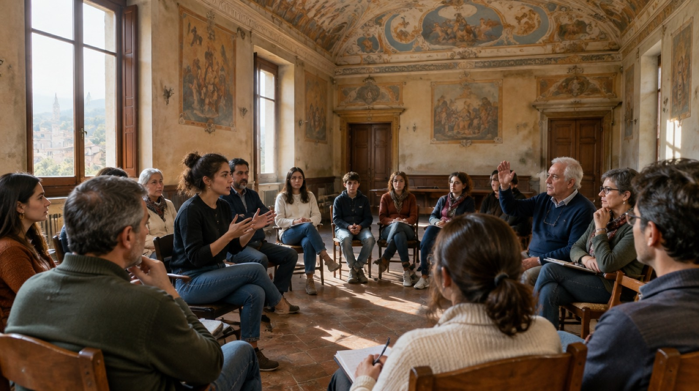
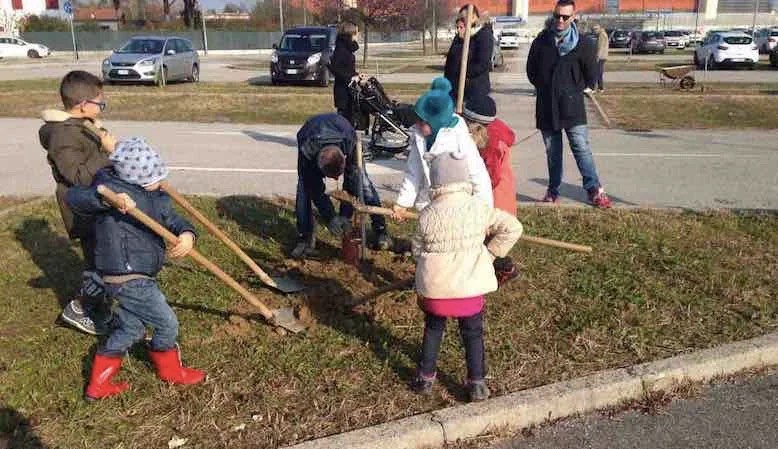

Meno burocrazia inutile
Diritti che esistono sulla carta ma si perdono tra moduli, termini e uffici. Questi strumenti leggono le regole al posto tuo, ti dicono cosa ti spetta e preparano il documento giusto, con la fonte.
Navigatore dei servizi
Cosa devo fare per…? Scrivilo con parole tue: i passi, i documenti, quanto costa, i termini e il link al servizio ufficiale.
- 40 pratiche: residenza, documenti, famiglia, lavoro, fisco, auto, casa
- Solo fonti ufficiali, con la data di verifica
- Le novità 2026, come la fine della carta d'identità cartacea
Mi spetta
A quali bonus e prestazioni pubbliche hai diritto, quanto valgono e come chiederli.
- 24 prestazioni nazionali e 67 regionali, regole 2026
- Assegno unico con la tabella INPS ufficiale
- Fonte citata per ogni esito
Faccio ricorso?
Controlla la multa: termini, motivi oggettivi, quanto rischi. Se conviene, il ricorso è pronto.
- Notifica, autovelox, taratura, strisce blu, ZTL
- Prefetto o Giudice di Pace, con i costi
- PEC di tutte le Prefetture
Chiedo gli atti
Chiedi documenti e dati a qualsiasi ente pubblico, e sai cosa fare se tace o rifiuta.
- FOIA, accesso semplice o documentale
- 23.705 enti con la loro PEC
- Riesame e ricorsi già pronti
Mi rimborsano?
Volo in ritardo, treno soppresso, bagaglio perso, maxi-bolletta, internet che non va, addebito truffa: quanto ti spetta e la lettera pronta.
- Compensazioni dei voli da 250 a 600 €
- Bollette più vecchie di due anni da non pagare
- Indennizzi AGCOM, ARERA e rimborsi bancari
Reclami alla PA
Pratica ferma, nessuna risposta, disservizio: il passo giusto, i termini calcolati e la lettera, fino al difensore civico.
- Titolare del potere sostitutivo e ricorso contro il silenzio
- Difensori civici regionali con PEC verificata
- Sanità, servizi digitali, privacy
Si è rotto o ci ho ripensato
Un oggetto che si è rotto, un acquisto online su cui hai cambiato idea, un rimborso che non arriva: garanzia, riparazione, recesso, con la lettera al venditore.
- Due anni di garanzia, 12 mesi in più se lo riparano
- 14 giorni per recedere, 12 mesi in più se non ti hanno informato
- Riparazione dal fabbricante anche dopo la garanzia
La visita nei tempi
Il CUP ti ha dato una data lontanissima? Con la classe della ricetta calcoliamo il tempo massimo e prepariamo la richiesta all'ASL: devono trovarti loro un posto, al costo del ticket.
- Tempi del Piano nazionale 2026-2028
- Percorso di tutela: un diritto, non un favore
- PEC della tua azienda sanitaria
È una truffa?
SMS del pacco, telefonata della «banca», «ciao mamma, nuovo numero», investimenti miracolosi: i segnali di truffa prima di cliccare, e cosa fare subito se è già successo.
- Siti che imitano banche, Poste ed enti pubblici
- Siti oscurati dalla CONSOB
- Scadenze per contestare alla banca e per la querela

agenti civici · Più partecipazionePiù partecipazione alle scelte
Per decidere insieme bisogna sapere: come spende il Comune, come compra, chi occupa le cariche pubbliche, com'è l'acqua dei fiumi. E poi agire, segnalando o piantando un albero.
Il bilancio del mio Comune
Quanto spende il tuo Comune, per cosa, da dove arrivano i soldi e se i conti sono in ordine, rispetto ai Comuni della stessa grandezza.
- Rendiconti ufficiali di 7.808 Comuni
- Rifiuti, asili, strade, sociale: per abitante
- Disavanzo, debito, pagamenti ai fornitori
Red flag sugli appalti
Come compra il tuo Comune, la tua ASL o la tua Regione: affidamenti senza gara, gare con una sola offerta, fornitori che pesano troppo.
- 1,45 milioni di procedure del 2025, dati ANAC
- Segnali confrontati con gli enti simili
- Richiesta degli atti pronta per ogni gara
Segnalazioni urbane
Buca, lampione spento, rifiuti, veicolo abbandonato, barriere: chi deve intervenire e la segnalazione formale da mandare dalla tua PEC.
- Comune, Provincia, ANAS, ARPA, ASL o gestore, con la PEC
- 112 e Pronto ANAS quando c'è pericolo
- Promemoria e sollecito se nessuno interviene
Raccolte firme in corso
Le proposte di legge e i referendum che puoi firmare online: quante firme hanno, quanto manca e quanto è probabile che ce la facciano.
- Dati della piattaforma pubblica del Ministero
- Ritmo delle firme e stima con metodo dichiarato
- Link diretto per firmare con SPID o CIE
Le carte del potere
L'osservatorio delle nomine pubbliche: chi siede sulle poltrone nominate dalla politica, chi l'ha nominato, quanto vale quella poltrona e quando scade. Ogni dato con la sua fonte.
- Enti, società partecipate, sanità, ministeri
- Lo scadenzario delle prossime nomine
- Fatti affiancati, mai punteggi politici
Fiumi Puliti
La qualità dei fiumi italiani misurata dai cittadini, su una mappa: pH, nitrati, fosfati, Escherichia coli, ossigeno disciolto, temperatura e indice LIMeco, con le soglie di riferimento.
- 1.817 punti sulla mappa
- Iscrizione per aggiungere rilevazioni
- Documento del progetto scaricabile

Alberi per il futuro
Ogni anno, intorno al 21 novembre, cittadini e Comuni piantano alberi insieme. Un'idea di Gianroberto Casaleggio che dal 2024 portano avanti gruppi e associazioni diverse: qui il formato da seguire, il vivaio della tua Regione e le lettere pronte.
- Oltre 57.000 alberi in circa 250 città nelle prime edizioni
- Il vivaio pubblico della tua Regione
- Le lettere pronte per il Comune e per il vivaio